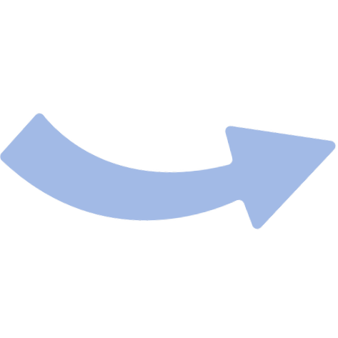
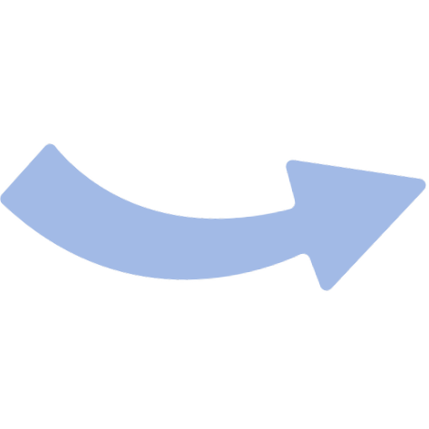

Инструкция по прохождению экзамена на платформе Examus
Пройдите все шаги и подготовьтесь к тестированию.
Правила и технические требования
Онлайн-тестирование проводится с прокторингом. Экзамен записывается на камеру, а специальные алгоритмы фиксируют возможные нарушения правил. Это помогает справедливо оценить ваши навыки. Узнайте о всех правилах прохождения экзамена по выбранной вами сертификации.
Шаг 1. Скачать заранее и пройти предварительную проверку устройства на совместимость
.png)
Проверить своё устройство
Проверить устройствоОбязательно пройдите проверку оборудования за несколько дней до тестирования. В день тестирования используйте то же устройство, на котором была успешно пройдена проверка.
Шаг 2. В день тестирования перейдите в свою почту и откройте полученную от вашего организатора ссылку. Ссылку открывать нужно в браузере Chrome/Edge/Yandex.
Ниже приведен пример того, как выглядит письмо.

После открытия ссылки нажмите Начать.
Шаг 3. Откроется Экзамус. Нажмите Запустить Систему Прокторинга.

Шаг 4. Отсканируйте QR-код со своего смартфона и разрешите доступ к камере на смартфоне.
 


Шаг 5. Пройдите этапы проверки показа рабочего стола, ознакомления с правилами, проверки оборудования. После закрытия процессов будет запущено тестирование.

Шаг 6. Начните прохождение тестирования на платформе. Для завершения тестирования нажмите Ответить и завершить.

Ответы на часто задаваемые вопросы
Как узнать свой результат тестирования?
Результат тестирования будет направлен вам по электронной почте, а также доступен в личном кабинете через 14 дней после экзамена.
В зависимости от числа набранных баллов участник получает отметку «сдано» или «не сдано». При получении отметки «сдано» и положительном заключении прокторинга участнику высылается сертификат Yandex Cloud. При получении отметки «не сдано» и положительном заключении прокторинга участник получает информацию о проценте правильных ответов по каждому из доменов. При отрицательном заключении прокторинга участник получает информацию о причинах отклонения результатов.
Можно ли предварительно проверить своё устройство на соответствие техническим требованиям?
Да, конечно, вы можете перейти по ссылке ниже для проверки оборудования.
Проверить оборудованиеПишет, что нет разрешения на доступ к рабочему столу или не проходит проверка оборудования в защищённом браузере.
Попробуйте воспользоваться cтатьями:
- https://help.examus.net/article/63203
- https://help.examus.net/category/15135
- https://help.examus.net/article/63304
- https://help.examus.net/article/63252
Также помните, что для прохождения тестирования необходимо:
- Иметь скорость интернет-соединения не ниже 1 Мбит/с;
- Отключить все сторонние приложения, антивирусы, VPN, и прочие программы, которые могут влиять на скорость;
- Иметь исправные веб-камеру и микрофон;
- Разрешить доступ к рабочему столу (для macOS нужно предварительно настроить для macOS доступы к микрофону, камере и выдать универсальный доступ: https://help.examus.net/article/63203).
Как можно связаться с поддержкой?
Если у вас возникли вопросы, то можете связаться со Службой Заботы Экзамус:
- Telegram: https://t.me/examusbot
- Почта: support@examus.com
- Чат в левом нижнем углу (только в защищённом браузере)
Можно ли использовать рабочий ноутбук?
Проходить тестирование рекомендуется только с личного устройства, без VPN и без корпоративной сети.
Технические требования для компьютера
- Операционная система:
- Windows 10 x64 / Windows 11 x64 или более полные издания (Windows 10 S, Windows 8 RT и все 32-разрядные версии - не поддерживаются);
- macOS версии 10.12.1 или выше;
- Процессор:
- Intel Core 2 DUO или AMD Athlon x2, либо более новые модели с поддержкой SSE3, с 2 ядрами и больше, и частотой 1,8 ГГц и выше
- Оперативная память:
- 4 ГБ и больше;
- Свободное место на диске:
- 500 МБ и больше;
- Веб-камера:
- Фронтальная веб-камера с разрешением 640x480 и выше;
- Микрофон:
- Наличие исправного и включенного микрофона (включая встроенные в ноутбуки);
- Скорость интернет-соединения:
- Не ниже 1 Мбит/с;
- Передача данных по сетевым портам:
- UDP: 3478 (STUN/TURN), 49152 - 65535 (WebRTC media),
- TCP: 443 (HTTPS), 3478 (STUN/TURN)
При входе вижу белый экран. Что делать?
Данная ошибка возникает из-за того, что страница тестирования не загрузилась, чаще всего из-за проблем с интернет-соединением.
Для её решения рекомендуем следующее:
- Отключить VPN, если вы его используете, и перезагрузить приложение;
- Если вы используете macOS, то отключите IPv6. Перейти в меню Apple > Системные настройки > Сеть > у своей сети выбрать Подробное > IPv6 выключить, либо выбрать Вручную: ссылка на инструкцию
- Если у вас iPhone и macOS находятся в одной сети и подключены в одной сети, то отключите какое-то из устройств, оставьте только одно устройство подключенным.
- Попробуйте подключиться к более быстрой сети интернет.
- Попробуйте перезагрузить страницу в защищённом браузере, нажав на кнопку в меню справа "Перезагрузить".
Источник: https://help.examus.net/article/65185
Написано, что не работает с выключенным JavaScript. Что делать?
(Комментарий: на изначальном сайте в этом пункте написана РОВНО та же информация, что и в предыдущем пункте "При входе вижу белый экран. Что делать?")
На смартфоне после сканирования кода и перехода по ссылке не отображается изображение с камеры.
Это значит, что в мобильном браузере был установлен запрет на использование камеры сайтами.
На Android обычно используется Google Chrome, проверить какой браузер использовался у вас - можно нажав на три точки.
В случае использования Google Chrome, выполните следующие шаги:
- Запустите сам браузер Google Chrome
- Зайдите через три точки в Настройки
- Выберите Настройки сайтов
- Выберите Камера
- Переключатель Камера должен быть во включенном положении, а субдомены examus.net в разделе Разрешено
- После исправления настроек обновите страницу тестирования на компьютере, и просканируйте заново QR-код.
Если используете Яндекс, внизу на кнопку с тремя полосками - Нажать на кружок с буквой i справа от имени сайта - Включить камеру.
Источник: https://help.examus.net/article/63332
Не получается выдать доступ в macOS, пишет, что нет системного доступа.
Для macOS нужно отдельно выдавать доступ к приложению. На разных версиях процесс выглядит по-разному.
- Перейдите в меню Apple > Системные настройки > Защита и безопасность > Конфиденциальность
- Выставьте флажки возле пунктов:
- Камера - Examus
- Микрофон - Examus
- Универсальный доступ - Examus
- Сохраните настройки.

На некоторых версиях нужно также установить лимит экранного времени для веб-камеры:
- Выберите меню Apple > Системные настройки > Экранное время > Контент и конфиденциальность > Приложения
- Убедитесь, что для камеры установлен флажок;
- Выберите "Лимиты приложений". Чтобы использовать камеру с приложением из списка, убедитесь, что флажок "Лимиты" не установлен.
- Сохраните настройки и перезагрузите браузер.
Необходимо также проверить настройки управления доступом к записи экрана и системной аудиозаписи:
- Перейдите в меню Apple > Системные настройки, затем нажмите Конфиденциальность и безопасность в боковом меню. (Возможно, потребуется прокрутить вниз.)
- Нажмите справа Запись экрана и системного звука.
- Для приложения EXAMUS (или браузера из которого вы проходите тестирование) включите возможность записи. Необходимо разрешить доступ к записи экрана и звука.
Чтобы добавить приложение в список, нажмите кнопку «Добавить» (+) под списком, затем перейдите к приложению, которое хотите добавить.
ВНИМАНИЕ! В некоторых случаях, может помочь удаление приложения EXAMUS из этого списка и добавления заново (необходимо еще раз проверить, что разрешения на запись стоят).
Для того, чтобы более точно узнать где, в вашей версии MacOS, находится управление записью экрана, можно воспользоваться инструкцией на официальном сайте Apple (ссылка на инструкцию).
Если эти настройки недоступны для изменения, то необходимо отключить защиту. Нажмите на значок с изображением замка, чтобы разблокировать данный раздел настроек. Потребуется ввести имя и пароль администратора.
Источник: https://help.examus.net/article/63203